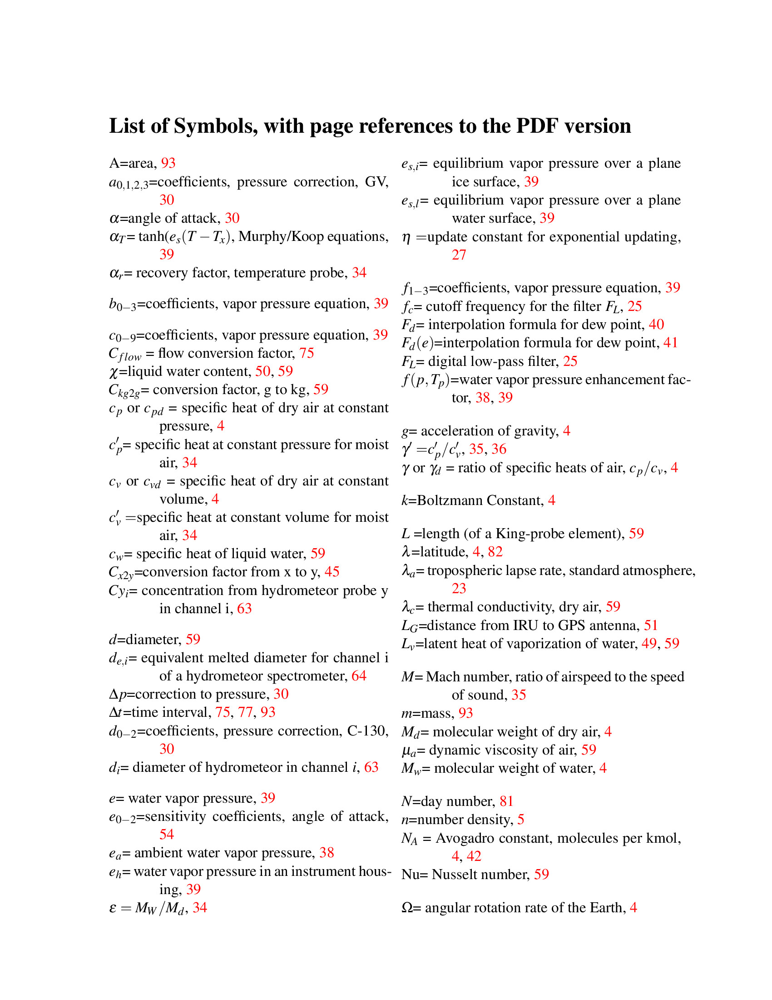
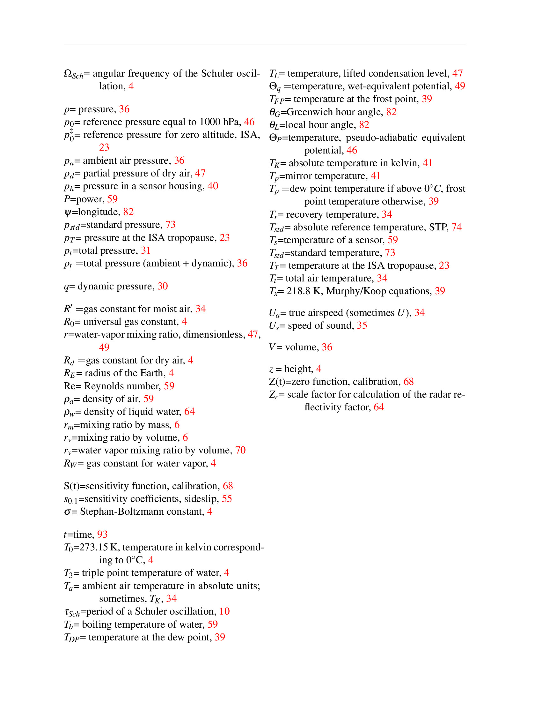

Appendices
List of Symbols
 
Variables Names
A200X A200Y A260X AACT ACDP ACINS ADIFR AF300 AFIXx (obsolete) AFSSP AIDC AIDP AKFXx (obsolete) AKRD AL ALAT (obsolete) ALON (obsolete) ALPHA (obsolete) ALT ALTG ALTX APCAS AS100 AS200 ATC AT_ITR@AT_ITR ATKP (obsolete) ATRF (obsolete) ATTACK ATx ATX ATxH AUHSAS BDIFR BFIXx (obsolete) BLATA BLONA BNORMA BPITCHR BROLLR BYAWR C1DC C1DP C200X C200Y C260X CAVP_x@CAVP_x CCDP CCEP (obsolete) CF300 CFSEC (obsolete) CFSSP CGS (obsolete) CH4_PICx@CH4_PICx CLAT (obsolete) CLON (obsolete) CMODE CNTEMP CNTS CO CO2_PICx@CO2_PICx COCAL COCOR COMR_AL@COMR_AL CONC1DC CONC1DC100 CONC1DC150 CONC1DP CONC3 CONC6 CONCD CONCF CONCH_UVH@CONCH_UVH CONCN CONCP CONCP CONCU CONCU CONCU100 CONCU500 CONCV_VXL@CONCV_VXL CONCX CONCY CORAW_AL@CORAW_AL COZRO CPCAS CRHP CS100 CS200 CSEC (obsolete) CUHSAS DBAR1DC DBAR1DP DBZ1DC DBZ1DP DBZ6 DBZD DBZF DBZX DBZY DEI DISP1DC DISP1DP DISP3 DISP6 DISPD DISPF DISPP DISPU DISPX DISPY DNI DP_CR2C@DP_CR2C DPCRC DP_VXL@DP_VXL DPx DPx DPxC DPXC DP_x@DP_x DT1DC DVALUE EDPC EDPC (obsolete) EW_UVH@EW_UVH EWx EWX FACT FBMFR FCN FCNC FO3_ACD@FO3_ACD FO3_CL@FO3_CL FO3_x@FO3_x FP_CR2@FP_CR2 FPCRC FRANGE FRESET FRNG FRST FSTB FSTROB FXAZIM FXDIST GALT_A@GALT_A GEOPHT GGALT GGALTC GGEOIDHT GGHWGS GGLAT GGLON GGNSAT GGQUAL GGSPD GGSTATUS GGTRK GGVEW GGVNS GGVSPD GLAT GLON GMODE (obsolete) GSF GSF_G@GSF_G GSF (obsolete) GSTAT GSTAT_G@GSTAT_G GVZI (obsolete) HGM HGM232 HGME HI3 (obsolete) IAS IRx IRxC IRxC IRxHT IRxHTV IRXV LAT LATC LAT_G@LAT_G LON LONC LON_G@LON_G LWCC (obsolete) LWC (obsolete) MACH = Mach number MACHx MACHX MIRRORT_CR2@MIRRORT_CR2 MR MRCR MRLA MRLH MRVXL O3FS O3MR_CL@O3MR_CL OAT PACT PALT PCAB PCN P_CR2@P_CR2 PFLW PFLWC PHDG (obsolete) PITCH PLWC PLWC1 PLWC1 PLWC1DC PLWC1DP PLWC6 PLWCC PLWCD PLWCF PLWCG PLWCX PLWCY PS_A@PS_A PSDPx PSFD PSFRD PSURF PSX PSxC PSXC PSx@ PTIME (obsolete) QCBC (obsolete) QCB (obsolete) QCGC (obsolete) QCG (obsolete) QCx QCX QCxC QCXC RAWCONC_VXL@RAWCONC_VXL REFF2DC REFF2DP REFFD REFFF RHOLA RHOUV RHOx RHUM RHUMI RICE ROC ROLL RSTx RTHRx RTx RTX RTxH SCLWC SFC SOLAZ SOLDE SOLEL SOLZE SPHUM SPxPitch SPxRoll SSFXx (obsolete) SSLIP SSRD SWTC SWx TASHC TASxD TCAVB TCAVT TCNTP TCNTU TEMP1 TEMP2 TEO3 TEO3C TEO3P TEP TET THETA THETAE THETAP THETAQ THETAV THF (obsolete) THI (obsolete) Time TKAT_G@TKAT_G TMLAG (obsolete) TPTIME (obsolete) TRSTB, TRSTT TTKP TTKP (obsolete) TTRF TTRF (obsolete) TTx TTx TTx TVIR UI UIC UPRESS USFLWC USMPFLW UVx UX UXC VCRH VEW VEWC VEW_G@VEW_G VEW (obsolete) VI VIC VISxC VISxHT VISxHTV VISxV VLA VLA VNS VNSC VNS_G@VNS_G VNS (obsolete) VSPD VSPD_G@VSPD_G VY VYC VZI (obsolete) WD WDC WDRCTN (obsolete) WI WIC WP3 WS WSC WSPD (obsolete) XCOMR XFO3FNO XFO3FS XFO3P XICN XICNC XMACH2 XNCLF XNMBT XNO XNOCF XNOSF XNOY XNOYP XNOZA XNSAF XNST XNZAF XO3 XSIG_UVH@XSIG_UVH XUVI XUVI XUVP XUVT XVI (obsolete) YVI (obsolete)
Suggested Additional Steps
| page | suggested action | who? |
|---|---|---|
| Update MW table for current CO2 concentration | ||
| Add, to constants table, a reference to what has been in use previously. (See Code.amlib as saved 2011, for examples) | WAC – not sure if needed? | |
| Ask Teresa and Mike R. to review the discussion re trace-gas units | done, MR | |
| Get info from Chris W describing interpolation and time adjustments, for inclusion as an addition to the section on times. Revise section. | ||
| Get place to put algorithm notes, and include links to those additional discussions in this document. | partly done | |
| In algorithm boxes, when variables are referenced, make those references active links to the discussion of the variable | WAC: use hyperlink{}{} | |
| Get description of the history of the C-130 INS, with characteristics for the Litton at least. | ||
| Add history of GPS systems: What was used when (C-130 at least) | ||
| Add/clarify section on height-above-terrain; modify to ref. geoid. Need to change HeightAboveTerrain() script. | partly done, WAC, | |
| check/clarify discussion of height-above-geoid and, generally, geopotential vs geometric vs geoid height | done - WAC | |
| Add a variable representing geopotential height and change DVALUE to be based on it minus PALT | WAC - done (proposed) | |
| Clarify meaning of mode and status for old GPS units, and if used anymore | ||
| Add new section on ALTC? Info is there in comments. Implement? | ||
| should there be a vertical velocity of the AC based on data-system GPS? ROC as used for reprocessing, and WIR as backup to WIC? | ||
| Check/update sensors used on both aircraft. | ||
| Add to historical description of PCORs, esp. re subroutine references (QCF, MACH_A, ADIFR) | ||
| Add a discussion of the additional corrections to QCR that could make this less sensitive to AOA? Algorithm is developed and documented; implement? Coefficients in ProcessingAlgorithms.pdf are based on ARISTO2016 flight 6. | WAC - done (proposed) | |
| Suggestion: consider ALT_G and avoid ALT for GPS avionics variable | ||
| Consider change to spherical geometry for distance north and east of reference point because range of GV is so great | ||
| need to explain how the two measures of longitude, with high and low resolution, are used together. | ||
| Need to implement the discussion re correction for the displacement of the GPS antenna from the INS. When done, need to add LG=-4.30 m to the attributes for GGVSPD, GGVEW, GGVNS (GV) and get appropriate values for the C-130 | WAC - done (proposed) | |
| Get Dick Friesen or someone to review and update the discussion of GPS GSTAT | ||
| Revise the values listed for the complementary-filter feedback to match what is used now – better with lower values than listed | ||
| It might be useful to disable the roll test in gpsc.c, now that GPS is better than when this was implemented | ||
| Goodrich Technical Report 5755: should we get permission and post this? (FAAM has it posted) | ||
| In-cloud air T radiometer: could use more detail re the processing algorithm | ||
| Check all the complex M-K section, esp. Tk and DP interp. function | partly done - WAC | |
| Consider changing name to FP_CR2 in preference to MIRRORT_CR2? | ||
| For CONCV_VXL, I think we need cal coefficients and equations used | ||
| For RHOx, the code now uses 216.68 instead of 100000/461.5228=216.674 as specified here; change? | ||
| Check that current code uses the modified PCOR function with humidity correction and early-error corrected | ||
| The PSURF definition references PSFDC; replace with PSXC? | ||
| “ATTACK” and “SSLIP” differ from other “preferred” variables by not having “X” at the end. Consider name change? | ||
| The variable WIC is described as “GPS-corrected” but that is misleading because it is really based, for aircraft motion, solely on GPS in recent usage (where dependence is on GGVSPD). Contrast to WDC/WSC which are really GPS-corrected. Suggest a different name, like “Wind Vector, Vertical Component, using GPS”? | ||
| Re Gerber probe, I didn’t find code for this; need to describe the algorithm. | ||
| It would be useful to update Bulletin 24 re hydrometeor spectrometers, with info from Bansemer and reference to work by Korolev, Strapp, Jensen, etc. | ||
| Is “PMS/CSIRO King” correct? DMT? | OK - JBJ | |
| Variables like AS200 have names with “Raw Accumulation” – seems awkward, consider name change? Maybe “Count” per channel? | ||
| add the variables for total counts? | ||
| some additions are needed here: RAFFD, PVOLU, TCNTD (total counts all cells, CDP); housekeeping variables? All: first and last bins? UHSAS: T and P in canister including UPRESS intensity, etc., better in sect 7 | ||
| REFF2DC seems mis-named; all others based on 1D sizing from 2D have names involving 2DC | ||
| need Teresa and/or Andy W to check this section | ||
| need to understand and document what te03c.c does, and perhaps move to obsolete? | ||
| Is NO-related discussion OK? is this right: The one named NO2 is actually for NOy? | ||
| In true measurement mode, XNOZA and XNZAF will be near zero – is this right? | ||
| I think the corrected-NO mixing ratio section may need revision? | ||
| “has the provision for the addition of water vapor” – does that mean this is always done, or only sometimes? | ||
| to “0.1-360 s” add “but is typically set to 0.1 s”? | ||
| UPRESS: the attributes for this variable say the units are kPa; is that incorrect? Mike R lists it as hPa. | resolved | |
| check signs here for WD and WS; this differs from the section-9 equation … ?? | ||
| For EDPC, the <-50 branch looks suspicious and needs checking | ||
| For old cryogenic hygrometer, find and include the 3rd-order equation referenced here | ||
| check Goff-Gratch formulas; there was some ambiguity in what was in B9 | ||
| Should include basic equation for SWTC | ||
| re TECO CO: is the direct measurement (ppb) a mass ratio? Need explanation here if so to describe difference between ppb and ppbv | ||
| COCAL: how does this differ from XCOMR? Why is this in the “obsolete” section? Same for O3FS? | ||
| For SCLWC, this is missing crucial information like how accreted mass is obtained from voltage. Couldn’t find the algorithm. Consider Mazin version? Or old one for Wyo KA? | ||
| There are some additional notes regarding obsolete variables, esp. involving FSSP processing, that are not included here. | ||
| WIC, GGALT, etc. | Review and correct descriptive attributes (e.g., WIC, GGALT, *DGPS | |
| StdSpeedofSound is wrong; enters ias.c – obsolete now? | ||
| fix Rd in xlate/const.c: calculated with wrong Md, although right one is listed later in routine. (trivial difference) | ||
| Lv defined in xlate/const.c is not latent heat but derivative of latent heat vs T. Used correctly in thetap.c and plwcc.c, but deceptively commented | ||
| Review and approve new AKRD description |
How to Edit This Document
Here are some notes regarding the construction and structure of this document:
-
The reference version is ProcessingAlgorithms.lyx, which needs ’LyX’, a user interface to TeX. It is available on EOL machines like tikal. Start it with “lyx ProcessingAlgorithms.lyx”
-
The document is broken into many sections, referenced by the above file, so they must be present also. Then have names like Section3.lyx
-
The document generates three indices: a regular index, a list of symbols, and a list of variables. The references for these are embedded in the .lyx files, and they can be modified or more can be added via the “Insert -> Index Entry” controls. These practices are useful when generating index entries:
-
entries like ’wind!relative’ will generate index entries as subordinate entries with ’relative’ below ’wind’
-
I have tried to emphasize using nouns to start index entries, so for example I would favor “coefficient!calibration” over “calibration coefficient.
-
It is sometimes useful to generate “see xxx” entries, which can be done as follows: “INS|see {Inertial Navigation System}” where the part in braces is also in LaTeX code, generated by pressing CNTL-L.
-
-
Creating a PDF-format file in LyX usually will generate these lists also. To be safe and ensure that the lists are updated, follow these steps:
-
Export a LaTeX file from LyX in pdflatex format, using the “export” option.
-
Run “pdflatex ProcessingAlgorithms” three times to be sure all references are resolved.
-
Run “splitindex ProcessingAlgorithms” to generate files for the lists.
-
Run “makeindex ProcessingAlgorithms” to generate the lists.
-
Run “pdflatex ProcessingAlgorithms” again.
-
-
The LyX files have embedded notes with additional information that should be retained, and exporting to LaTeX will lose this information, so it will be useful to retain the LyX format. The suggested next steps in the table above, for example, almost all have associated notes that will appear in yellow and will help identify where the comment applies.
-
It is sometimes easiest to edit the PDF file directly. Some of the web references have been changed in this way and can be adjusted as the reference files are moved, e.g., from my Google Drive to the EOL web pages. For this purpose, I found master-pdf-editor useful. This will lose continuity, however, because then the links can’t be re-generated by running LyX.
-
As of Feb 2019, many links formerly to google-drive addresses or eol system files have been changed to https://github.com/NCAR/aircraft_ProcessingAlgorithms links. In that directory there is a file (’links’) with a list of all the links in the document. It is worthwhile when updating this document to check that all the links remain current. One way is to use these R statements:
links <- readlines(’./links’); EURL <- rep(FALSE, length(links));
for (i in 1:length(links)) {EURL[i] <- RCurl::url.exists(links[i])}
and then check EURL to see that the links are all found.
How to Reference Specific Sections or Pages of this Document:
Variables
The document includes named destinations for each variable name, so when used in a URL that destination can be reached. This is done differently in different browsers or PDF viewers:
-
For a web browser like Chrome or Firefox, use the “nameddest” reference; e.g., for the discussion of variable ATX, use
firefox http://www.eol.ucar.edu/system/files/ProcessingAlgorithms.pdf#nameddest=ATX -
For a pdf viewer like evince, use this syntax:
evince -n ATX http://www.eol.ucar.edu/system/files/ProcessingAlgorithms.pdf
Most variable names can be used in these URL modifiers. Here is a list of available targets by section in the report:
Section 1: Time
Section 2: [none]
Section 3: ACINS ALT BLATA BLONA BNORMA BPITCHR BROLLR BYAWR DEI DNI FXAZIM FXDIST GGALT GGLAT GGLON GGNSAT GGOIDHT GGSPD GGSTATUS GGTRK GGVEW GGVNS GGVSPD GGWUAL GMODE GSF HGM HGM232 HGME HI3 LAT LATC LON LONC PALT PITCH ROLL THDG VEW VEWC VNS VNSC VSPD
Section 4: ADIFR AKRD AT_ITR ATx ATX ATxD ATxJ BDIFR CAVP_x CONCH_UVH CONCV_VXL DP_CR2C DP_VXL DPx DP_x DPxC DPXC DVALUE EDPC EW_UHV EWx EWX FP_CR2 MACHx MACHX MIRRORT_CR2 MIRRTMP_DPX MR MRCR MRLA MRLH MRVCL OAT PCAB PS_A PSDPx PSFD PSFRD PSURF PSx PSX PSxC PSXC QCx QCX QCxC QCXC RAWCONC_VXL RHOx RHUM RHUMI RTHRx RTx RTX RTxH SPHUM SSLIP TASHC TASx TASX TASxD THETA THETAE THETAP THETAQ THETAV TVIR UI UIC UX UXC VI VIC VY VYC WD WDC WI WIC WS WSC XSIGV_UHV
Section 5: A1DC A1DP A200X A200Y A260X ACDP AF300 AFSSP APCAS AS100 AUHSAS C1DC C1DP C200X C200Y C260X CCDP CF300 CFSSP COMCP CONC1DC CONC1DC100 CONC1DC150 CONC1DP CONC3 CONC6 CONCD CONCF CONCU CONCX CONCY CPCAS CS100 CUHSAS DBAR1DC DBAR1DP DBAR3 DBAR6 DBARD DBARF DBARP DBARU DBARX DBARY DBZ DBZ1DC DBZ1DP DISP1DC DISP1DP DISP3 DISP6 DISPD DISPF DISPP DISPU DISPX DISPY DT1DC FRANGE FRNG PLWC1 PLWC1DC PLWC1DP PLWC6 PLWCC PLWCC1 PLWCD PLWCF PLWCG PLWCX PLWCY REFF2DC REFF2DP REFFD REFFF RICE
Section 6: CO2_PIC COMR_AL CORAW_AL FO3_ACD FO3_CL O3MR_CL TEO3 TEO3C TEO3P TEP TET XFO3FNO XFO3FS XFO3P XNCLF XNMBT XNO XNOCAL XNOCF XNOSF XNOY XNOYP XNOZA XNSAF XNST XNYCAL XNZAF XO3
Section 7: CNTEMP CNTS CONCN CONCP CONCU CONCU100 CONCU500 FCN FCNC PCN PFLW PFLWC TCHTP TCNTL TEMP1 TEMP2 UPRESS USFLWC USMPFLW XICN XICNC
Section 8: IRxHT IRxV RSTx SPxPitch SPxRoll TRSTx VISxC VISxHT VISxV
Section 9: [none]
Section 10: OBSOLETE
Page Numbers
To reference a specific page in the document, use a web reference like this:
ProcessingAlgorithms.pdf#page=44
In evince, this syntax will work, or the page number can be specified in this way:
evince -p 115 ProcessingAlgorithms.pdf
Sections and Subsections
Targets have not been provided for other parts of the document, but the above method of referencing pages can be used to link to specific sections and other components of the document.
10.0.1 Adding New Targets
When a new variable is added, a new anchor point can be added by inserting, in LaTeX mode, at the appropriate point in the LyX document. (has been defined to use \hypertarget but displace the reference upward one line.) In addition, when a new variable is added, entries should be made in the index items and the variable-names list, following the pattern used for existing variables, and if appropriate any new symbols used in discussing the algorithm should be added to the similar symbols list.